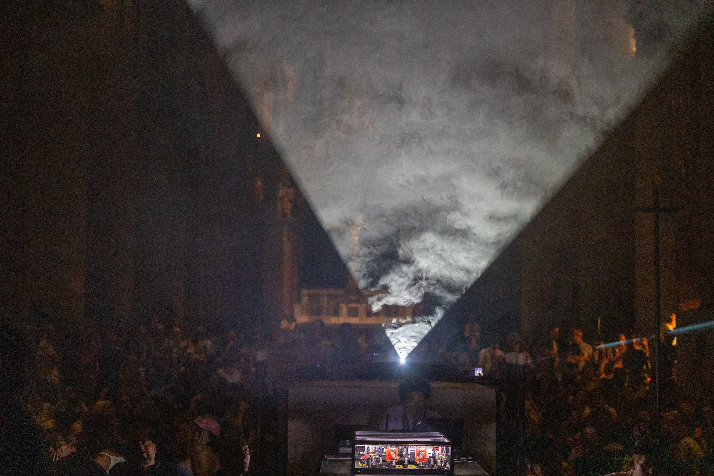
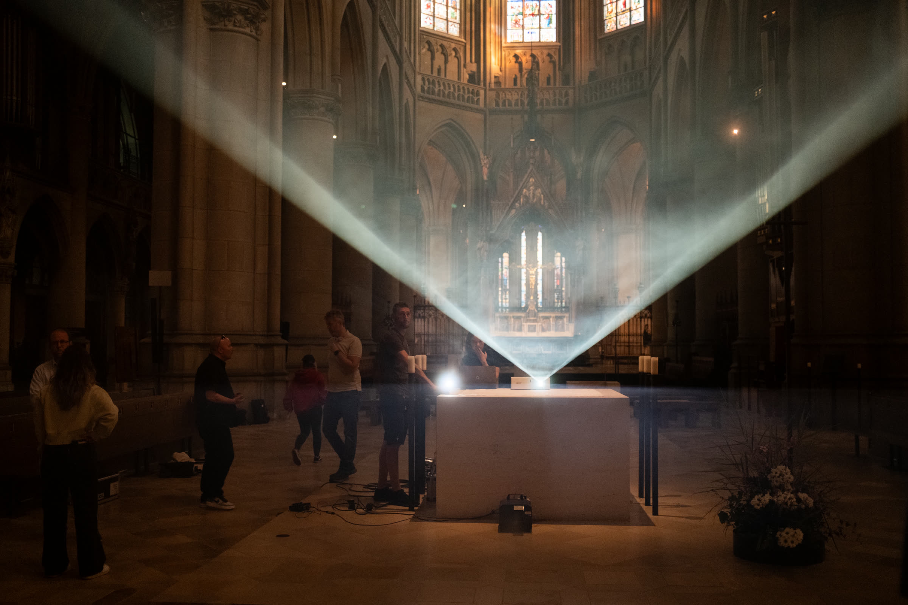

A laser, a crystal, mirrors and four single-photon detectors: a Bell experiment from a quantum optics lab, set up on stage.
Inside it, pairs of entangled photons are created and measured. One photon of each pair goes to a station called Alice, the other to a station called Bob. Each result is random, and nothing causes it. Yet Alice's and Bob's results agree in a way no classical system can reproduce.
The experiment sends every result, live, to the musicians and to the projectors. It takes the place of the conductor. Because the results are genuinely random, no two performances can sound or look the same.
At the premiere, the correlations reached a Bell value of about 2.45. Any classical explanation stops at 2.
How the experiment works
Programme
-
BruQner
2024for two cathedral organs, entangled photons and light, after Anton Bruckner's Perger Präludium
For each measured pair, the experiment picks one of four motifs for each organ. The two organists, thirty metres apart, read them from screens a bar ahead and play them together.
-
8 Rooms
2025for synthesizer, electric bass, drums, two clicking wave plates and entangled photons
The motors that turn the wave plates click with every measurement, and those clicks are the metronome. A quantum random walk moves the band through eight rooms, each with its own sound, until every door leads to the ninth.
-
Indeterminate Apparatus
2025for synthesizers, VoQoder, electric bass, drums and entangled photons
The Bell value sets the tempo. It starts loose and noisy, then steadies as correlations add up. In the classical middle section it cannot pass 2, and the music slows.
Music by Clemens Wenger; 8 Rooms with Manu Mayr and Judith Schwarz. Visuals by Enar de Dios Rodríguez. Experiment by Benjamin Orthner.

Next
University of Innsbruck
Dies Academicus and MIP Alumni Day
Programme and times to follow.
Past performances
- Zirkus des WissensJohannes Kepler University, LinzIndeterminate Apparatus
- CIVA FestivalBelvedere 21, ViennaIndeterminate Apparatuspremiere
- European Forum AlpbachCongress Centrum Alpbach8 Rooms
- Tech Forum MillstattStiftskirche Millstatt8 Rooms
- Science Diplomacy SummitJohns Hopkins University, Washington DC8 Rooms
- Vienna Ball of SciencesVienna City Hall8 Roomspremiere
- antonbruckner2024Mariendom LinzBruQner
- Opening of Ars Electronica FestivalMariendom LinzBruQnerpremiere
From April to October 2025 a film about the project was shown in the Austrian Pavilion at EXPO 2025 in Osaka.

Read and watch
Paper, arXiv:2509.08892, 2025
The Sound of Entanglement
How the Bell setup works, why its correlations cannot come from any classical source, and how BruQner and 8 Rooms turn them into music.
Read on arXivDocumentary, weitblickfilm, 2025, 19 minutes
BruQner – The Sound of Entanglement
The team of artists and scientists in the days before the premiere in the Mariendom Linz.
Watch on YouTube